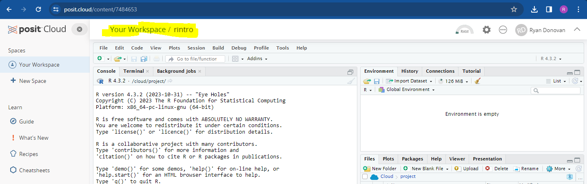
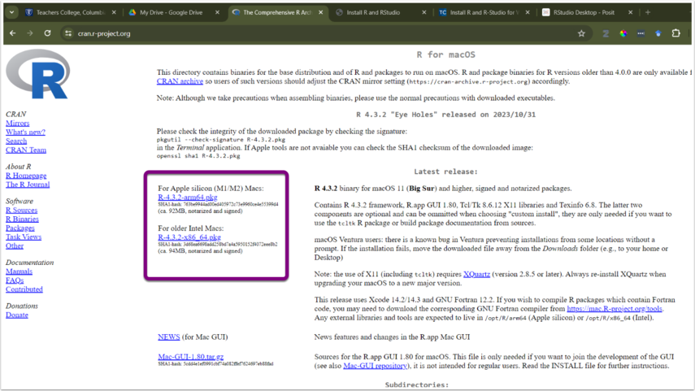

2 Getting Started with R and RStudio
This session introduces the programming language R and the RStudio application. Today, we will download both R and RStudio, set up our RStudio environment, and write and run our first piece of R Code. This will set us up for the rest of the course.
2.1 What is R?
R is a statistical programming language that enables us to directly communicate with our computers and ask it perform tasks. Typically we rely on button-click applications (e.g. SPSS, Excel, Word) to communicate with our computers on our behalf. These applications translate our button-click commands into a language that our computer can understand. Our computer then carries out those commands, returns the results to the application, which then translates those results back to us.
Applications like SPSS are convenient. They usually have a user-friendly interface that makes it easy to communicate with our computer. Consequently, this means one can become highly competent in a short amount of time with such applications.
However, these applications also limit what we can do. For example, base SPSS is functional when it comes to creating data visualizations, but it is difficult to make major changes to your graph (e.g., making it interactive). If we want to create such visualizations, we will likely need to use an alternative application. Similarly, we might also be financially limited in our ability to use such apps, as proprietary software like SPSS is not cheap (it can cost between $3830 - 25200 for a single licence depending on the version)!
In contrast, R is a free, open-source statistical programming language that enables us to conduct comprehensive statistical analysis and create highly elegant visualizations. By learning R, we can cut out the middleman.
Figure 2.1: BBC graphs created in R.
But why R and not a different programming language? R was developed by statisticians for the purpose of conducting statistic analysis. In contrast, other popular programming languages (Python, JavaScript, C) were designed for different purposes. Consequently, R contains an extensive vocabulary that enables us to carry out sophisticated and precise statistical analysis. I have both used R and Python (often used in Data Science) to conduct statistical analysis, and I have found it significantly easier in R to run a wide range of statistical tests. Similarly, there is extensive support available online to enable you to run statistical analyses in R. This explains why R is typically used among statisticians, social scientists, data miners, and bioinformaticians. For these reasons, we will be using R in this course 1.
2.2 Create a Posit Cloud Account.
In the next section, I am going to show you how to download R and RStudio onto your laptop. But before we do that, I want you to set up a free account on Posit Cloud (formerly known as RStudio Cloud). Posit Cloud enables you to run R and RStudio online for free, with no need to install anything.
If you are using the desktops in the lab, then please only use Posit Cloud in all of our R and RStudio classes. It is much easier to run R and RStudio on Posit Cloud than on the absolute tragic disaster of an operating system they use on the desktop Windows machines. Please, please, please do not use the RStudio version on the desktop computers in the lab, or else your R life will be brutal and painful.
If you are using your own laptop, then use Posit Cloud as a backup option in case any technical issues pop up. During class, we might not be able to solve those issues quickly and efficiently (in a large classroom, one must always account for Murphy’s Law). Rather than being hamstrung by technical difficulties, you can sign into Posit Cloud and keep following along with the session.
You might be wondering, why not just use Posit Cloud? The reason is that there are some restrictions to the free version of Posit Cloud, namely that you can only use 25 hours per month and are limited in the amount of data you can use during that time. It’s highly unlikely that we will hit those restrictions in the next 10 weeks, but if you primarily use your laptop and Posit Cloud secondarily, then we do not have to worry about that.
For those of you on the desktop computers, if you do hit the max limit, then get in touch with Ryan (email: ryan.donovan@universityofgalway.ie). The simplest solution is just to create a second Posit Cloud account.
2.2.1 Instructions for Creating a Posit Cloud Account
To create a Posit Cloud account, please follow the following instructions:
Go to their sign up page website and enter your details to create an account or Sign up with Google.
Once you have created an account and are in Posit Cloud, click “New Project” From the drop-down menu click “New RStudio Project”. This should take a few seconds to set up (or “deploy”)
- Once it is deployed, name your project at the top as rintro

Don’t worry about what anything on the screen means for now. We’ll come back to that in the section Creating an RProject (2.5).
2.3 Downloading R on to your Computer (personal laptop or desktops only)
If you are using your own personal laptop or desktop (if at home), then please follow the following instructions to download R on either Windows or Mac.
If you are using the Desktops in the lab, do not follow these instructions, as we will be using Posit Cloud
2.3.1 Downloading R on Windows
- Go to the website: https://cran.r-project.org/
- Under the heading Download and Install R, click Download R for Windows

Click the hyperlink base or install R for the first Time
Click Download R-4.4.2 for Windows (depending on the date you access this, the version of R might have been been updated. That’s okay, you can download the newer version). Let the file download.

Figure 2.2: The R programming language is occasionally updated, so the specific version of R that you see might be different than mine. But that’s okay!
- Once the file has been downloaded, open it and click “Yes” if you are asked to allow this app to make changes to your device. Choose English as your setup language. The file name should be something like “R-4.4.2.-win” (numbers will differ depending on the version downloaded).
- Agree to the terms and conditions and select a place to install R. The default option is fine.
2.3.2 Downloading R on Mac
The instructions are largely the same for Mac.
Go to the website: https://cran.r-project.org/
Click Download R for (Mac) OS X.

- Check the Latest release section for the appropriate version and follow the directions for download. If you are unsure, please ask me.

- Once the file download is complete, click to open the installer. Click Continue and proceed through the installer. I recommend going with all default options.

Figure 2.3: Depending on your version of Mac OS, this might look slightly different. But you should still be able to install it.
- Once the R installer has finished, click Close.

2.4 Install and Open RStudio
Once R is installed, we will install RStudio. Again, if you are using the desktops in the lab, you do not need to install RStudio—just make sure you have followed the Posit Cloud instructions.
RStudio is a user-friendly front-end program for R, enhancing your R coding experience without sacrificing any capabilities. RStudio allows us to write and save R code, create plots, manage files, and perform other useful tasks. Think of RStudio as similar to Microsoft Word compared to a basic text editor; while you can write a paper in a text editor, it’s much quicker and more efficient in Word.
NB: Make sure that R is installed before trying to install RStudio.
Go to the RStudio website: https://posit.co/download/rstudio-desktop/.
The website should automatically detect your operating system. Click the Download RStudio Desktop button.

Once the file is downloaded, open it and allow it to make changes to your device. Follow the instructions to install the program. I recommend using all the default options during installation.
After downloading both R and RStudio, open RStudio on your computer. You do not have to open R separately, as RStudio will work with R if everything is set up correctly.
When you first open RStudio, you will see three panes or “windows” in RStudio: Console (left), Environment (top right), and Files (bottom right).
2.5 Creating an R Project
***Note: If you are using PositCloud instructions from 2.2.1, you have already created a project on PositCloud. Only follow this section if you are using your own computer or laptop.
Our first step in RStudio is to create an R Project. R Projects are environments that group together input files (e.g., data sets), analyses on those files (e.g., code), and any outputs (e.g., results or plots). Creating an R Project will set up a new directory (folder) on your computer. Whenever you open that project, you are telling R to work within that specific directory (in this context, “directory” is just a fancy word for a folder).
Activity - Create an R Project (Personal Computer or Laptop)
Let’s create an R Project that we will use during these sessions
Click “File” in the top left-hand corner of RStudio → then click “New Project.”
The “New Project Wizard” screen will pop up. Click “New Directory” → “New Project.”
In the “Create New Project” screen, there are four options we are going to change:
Option 1: The “Directory name” options sets the name of the project and associated folder.
I recommend that you set the same directory name as me - rintro
You can actually set this directory name to whatever you want, I cannot stop you. Just don’t set it to “R”, as this can create problems down the line.
Option 2: The “Create project as sub-directory of” option selects a place to store this project on your computer.
You can save it anywhere you like (e.g., your Desktop). Just ensure it’s in a place you can easily find and where it won’t be moved later.
My recommendation is to create a folder called “PS6183” on your desktop and save your project inside this folder.
Regardless of where you save your project, make a note of the location on your computer and keep it handy (e.g., in a text file).
Option 3: The “Use renv with this project” option enables you to create a virtual environment for this project that will be separate to other R projects. Don’t worry for now about what that means, it will be explained later on.
- Tick this option.
Option 4: The “Open in new session” just opens a new window on RStudio for this project.
- Tick this option.
Note on Github Repository: This will probably not appear on your RStudio project, but that’s okay, you don’t need it for this course.
You can see my example below. Once you’re happy with your input for each option, click “Create Project” This will open up the project rintro.
Figure 2.4: New Project Set Up
2.6 Navigating RStudio
In our new project, rintro, we are going to open the “Source” pane, which we will often use for writing code and viewing datasets.
2.6.1 Opening the Source Pane
There are a variety of ways to open the Source pane:
- Button approach: Click the “File” tab in the top-left corner → Click “New File” → Select “R Script.”

Button Shortcut: Directly underneath the File tab, there is an icon of a white sheet with a green addition symbol. You can click that too.
Keyboard Shortcut: Press “Ctrl” + “Shift” + “N” on Windows, or “Cmd” + “Shift” + “N” on Mac.
Now you should see your four panes: Source, Console, Environment, and Files.

2.6.1.1 The RStudio Workspace
Let’s briefly describe the purpose of each pane:
Source Pane: Where you write R scripts. R scripts enable you to write, save, and run R code in a structured format. For instance, you might have an R script titled “Descriptive,” containing code for computing descriptive statistics on your dataset. Similarly, you might have another R script titled “Regression” for performing regression analyses.
Console Pane: Where you can write R code or enter commands into R. The console also displays various outputs from your R scripts. For example, if you create a script for running a t-test, the results will appear here. Any error or warning messages related to your code will also be highlighted in the console. In short, this is where R actually runs your code.
Environment Pane: Displays information about datasets and variables imported or created in R within a specific project. The “History” tab shows a history of R code executed during the project. This pane is helpful for reviewing your work or returning to a project after some time.
Files Pane: Includes project files (Files tab), outputs of plots you create (Plots tab), a list of downloaded packages (Packages tab), and help documentation about R functions (Help tab).
We will use all four panes extensively during these classes.
2.6.2 Checking our Working Directory
Every time you open a project or file in RStudio, it’s good practice to check the working directory. The working directory is the environment on your computer where R is currently operating.
Ideally, you want the working directory to match the location of your R project. This ensures that any files you import into RStudio or any files you export (datasets, results, graphs) can be easily found in your R project folder. Checking the working directory can help prevent many common R problems.
To check the working directory, type the following into the console pane:
## [1] "C:/Users/0131045s/Desktop/Programming/R/Workshops/rintro"This will display the current working directory where R is operating. Your working directory will likely differ from mine, which is normal. Just confirm that it matches the location you specified when creating your project (Option 2).
2.6.3 Setting up a new Working Directory
In our R Project, we are going to create a folder for Week 1 of the workshop. Anything we create in R will then be saved into this folder.
- Click “Session” in the RStudio toolbar → Select “Set Working Directory” → Click “Choose Directory.”

- By default, you should be in your R Project (e.g., rintro).
Within this R Project, create a new folder and call it “week1.”
Click “week1” and then click “Open.”

You should see something like the following in your console
> setwd("C:/Users/0131045s/Desktop/Programming/R/Workshops/rintro/week1")Check whether this location is where you want to store your files for this course. If it is, you’re all set. If not, let me know during class.
2.6.4 Changing some default settings
Like most applications, RStudio comes with default settings, some of which can be annoying if you use R frequently. One such setting restores your data and commands from your last session when you reopen RStudio. While this sounds helpful, it can cause issues if you’re working on multiple projects or sharing code with others. Let’s change this setting:
In the toolbar at the top of RStudio, click Tools → Global Options.
Under the General tab, look for the “Save workspace to .RData on exit” option. Change it to “Never.” Untick the box as well.

2.7 Writing our first R Code
Let’s write our first line of R code in the console. The R console uses the prompt symbol > to indicate that it is ready for a new line of code.
Type in each of the following instructions (after the > prompt) and press Enter. Feel free to modify the second line of code to include your own name:
## [1] "Hello World"## [1] "My name is Ryan and I am learning to code in R"Congratulations, you’ve written your first piece of code!
Let’s describe what is going on here. We used a function called print() to print the words “Hello World” and “My name is Ryan, and I am learning to code in R” in the console. Functions are equivalent to verbs in the English language—they describe actions. Here, R identifies the print() function, looks inside the parentheses to see what we want to print, and then displays the specified text. Pretty straightforward.
Functions are a core programming concept, and there is a lot more going on under the hood than I have described so far. We’ll revist functions repeatedly and filling you in with more information. But in essence, functions are verbs that enable us to tell our computer what actions to perform.
2.8 Console vs Source Script
You might have noticed that I asked you to write code in the console rather than the source pane. Let’s discuss the differences:
Console: This is like having a live chat with R. You type commands, and R executes them immediately. The console is great for experimentation and quick feedback but not ideal for saving or organising your work.
Source Script: This is where you write and save your code in a structured format. Scripts allow you to keep a record of your work, organise it into sections, and rerun it later. Think of the source pane as a document for your final code.
From now on, we’ll write most of our code in R scripts. If I want you to use the console, I’ll let you know.
2.9 Let’s write some statistical code
Now that we’ve talked a lot about R and RStudio, let’s write some code that will:
Take a dataset
Calculate descriptive statistics
Generate a graph
Save the results
Don’t worry if you don’t understand all the code provided below. Just follow along and type it yourself into the R script we opened earlier. If it’s not open, click “File” → “New File” → “R Script.” Save the script as “01-sleep-descriptives.”
When you download R, it comes with several built-in functions (e.g., print()) and datasets. One of these datasets is called sleep, which we’ll use here. To learn more about the sleep dataset, type ?sleep into the console. You’ll find more information in the “Help” tab in the Files pane.
First, let’s take a look at the sleep dataset by writing the following code in your R script. To run scripts in R, highlight the code and click the “Run” button (with the green arrow) in the top right corner of the script pane.
## extra group ID
## 1 0.7 1 1
## 2 -1.6 1 2
## 3 -0.2 1 3
## 4 -1.2 1 4
## 5 -0.1 1 5
## 6 3.4 1 6
## 7 3.7 1 7
## 8 0.8 1 8
## 9 0.0 1 9
## 10 2.0 1 10
## 11 1.9 2 1
## 12 0.8 2 2
## 13 1.1 2 3
## 14 0.1 2 4
## 15 -0.1 2 5
## 16 4.4 2 6
## 17 5.5 2 7
## 18 1.6 2 8
## 19 4.6 2 9
## 20 3.4 2 10The print() function displays the sleep dataset in the console. There are other functions to explore datasets, such as head(), tail(), View(), and str(). Try these functions with the sleep dataset by typing them into the console to see their outputs.
From print(sleep), we can see there are 20 observations (rows) with three variables (columns):
extra: The extra hours of sleep participants had
group: The treatment group they were assigned to
ID: Their participant ID
2.9.1 Calculating Descriptive Statistics
Let’s calculate some descriptive statistics using the summary() function. This function takes an object (e.g., a dataset) and summarizes its data. Write the following code in your script and press “Run”:
## extra group ID
## Min. :-1.600 1:10 1 :2
## 1st Qu.:-0.025 2:10 2 :2
## Median : 0.950 3 :2
## Mean : 1.540 4 :2
## 3rd Qu.: 3.400 5 :2
## Max. : 5.500 6 :2
## (Other):8The summary() function provides descriptive statistics for each variable. For instance, it shows the mean change in hours of sleep (+1.5) and that there were 10 participants in each group.
However, this isn’t quite what we need. For instance, we don’t need descriptives for participant ID, and we want the mean scores split by treatment group. To get this, we can use the aggregate() function, which splits data into subsets and computes summary statistics for each subset. Add this to your script and run it:
aggregate(data = sleep, extra ~ group, FUN = mean)
#Here is what the code means
# code: data = sleep meaning: Go to the sleep data set
# code: extra ~ group meaning: Take the variable "extra" and split it into subsets based on the variable "group"
# code: FUN = mean meaning: Apply the mean() function (FUN) on each subset ## group extra
## 1 1 0.75
## 2 2 2.33Running this code shows the mean extra sleep for each treatment group. Participants in group 2 slept an extra 2.33 hours on average, while participants in group 1 slept only 0.75 hours more. It seems treatment 2 is more effective.
2.9.2 Creating a Visualisation
It’s always a good step to create visualisations with your data to get a better picture of what is going on. Let’s visualise our data with the plot() function.

The plot() function automatically determines the most appropriate plot—in this case, a boxplot. While this plot is functional, we can make it more informative by adding a title and labels for the axes:
#xlab = creates a label for the x-axis
#ylab = creates a title for the y-axis
#main = creates a title for the plot
plot(sleep$group, sleep$extra, xlab = "Treatment", ylab = "Hours of Sleep", main = "Effect of Treament on Sleep Duration") 
Figure 2.5: Generic Boxplot with appropriate labelling
This plot is more descriptive and also suggests a difference between the two groups. But is this difference meaningful? Later in the course, we’ll learn how to evaluate whether differences like these are statistically significant using inferential statistical tests.
2.9.3 Saving the Plot
Now, let’s take this plot and save it to a PDF so that we can share our results with others. The standard way of doing this in R is a bit cumbersome. We have to tell R that we are about to create a plot that we want to make into a PDF. Then we have to generate the plot. Then we have to tell R we are done with creating the PDF. We’ll learn a much simpler way to do this in future weeks, but this will do for now.
pdf(file = "myplot.pdf") #Tells R that we will create a pdf file called "my_plot" in our working directory
plot(sleep$group, sleep$extra, xlab = "Treatment", ylab = "Hours of Sleep", main = "Effect of Treament on Sleep Duration") #this will save the plot to our pdf
dev.off() #this tells R that we are done with adding stuff to our PDF## png
## 2Go to the files pane, and open up the pdf “myplot.pdf”. It should be in your working directory. Open up the PDF and have a look at your graph2.
2.9.5 Why Comments Are Important
Writing comments is like leaving notes for your future self (or for others working with your code). Imagine this scenario: you spend weeks creating a detailed R script to clean a messy dataset and run complex analyses. Months later, a reviewer or your supervisor asks for changes. When you reopen your script, you realise you’ve forgotten what each piece of code does! Without comments, you may spend hours trying to understand your own work.
By including comments, you save time and frustration. Additionally, comments help you solidify your understanding by requiring you to explain your code as you write it.
2.9.6 Best Practices for Comments
Comment frequently: It’s better to over-comment than to leave yourself guessing later.
Keep comments concise but clear: Avoid overly verbose comments that are harder to read.
Update comments if you change your code: Outdated comments can be misleading.
Use comments to break your script into logical sections.
2.10 Summary
There we have it! That completes our first session with R and RStudio. Today was more about getting to grips with the software R and RStudio, but we still got our first pieces of code written. Hopefully, it’s given you a tiny glimpse into what R can do.
In the next two sessions, we will learn basic programming concepts that will help you use R effectively, learn how to import data in R, and learn how to run descriptive statistics.
2.11 Glossary
This glossary defines key terms introduced in Chapter 2.
| Term | Definition |
|---|---|
| Comment | Text in an R script that is ignored by R. Comments are preceded by the # symbol and are used to add explanations, headings, or disable code temporarily. |
| Console | The interactive interface in RStudio where you can type and execute R commands and see their immediate output. |
| Environment Pane | The pane in RStudio that displays information about data sets, variables, and the history of R commands used in the current R session. |
| Files Pane | The pane in RStudio that displays the files and folders in your current working directory, as well as other useful tabs like Plots, Packages, and Help. |
| Function | A fundamental programming concept in R, representing a reusable block of code that performs a specific task. Functions are like verbs in English; they describe actions. |
| R | A programming language and environment for statistical analysis and data visualization. |
| R Project | An environment created in RStudio that groups together input files, code, and outputs. It helps organize and manage your work in a specific directory. |
| RStudio | An integrated development environment (IDE) for R, providing a user-friendly interface and tools for coding, data analysis, and visualization. |
| Script | A file containing a sequence of R commands that can be saved, executed, and reused. |
| Source Pane | The pane in RStudio where you can write and edit R scripts. |
| Term | Definition |
| Working Directory | The directory or folder on your computer where R is currently operating. It is important for managing file paths and organizing project files. |
There are always tradeoffs in selecting a language. Many programming concepts are easier to grasp in Python than in R. Similarly, there is a lot of resources available for conducting machine-learning analysis in Python.
But if you are goal is conduct data cleaning, analysis, visualization, and reporting, then R is a excellent choice. The good thing is that once you achieve a certain level of competency in one programming language, you will find it significantly easier to pick up a following one.↩︎
This is a fairly generic type of graph offered by base R. During the course we will looking at ways we can create “sexier” and more APA friendly type of graphs. But for one line of code, it’s not bad!↩︎
2.9.4 Comments
You might have noticed that I wrote several lines of text with a
#before them. These are known as comments. Comments are pieces of text that R ignores—they are not executed as part of the code. They are fundamental to writing clear and understandable code.We create comments using the
#symbol. This tells R to ignore everything that comes after the#on the same line.Comments serve a variety of purposes:
Figure 2.6: Four Examples of Comments Use
In the above figure, you’ll see four different types of comments.
Provide an Introduction: It can be really useful here to provide clear information on what this script is trying to do, what data it is working on (the sleep dataset), and who wrote or developed this script. This makes it significantly easier for anyone who might be reviewing your work or trying to apply your code to their own work to understand what is going on.
Structure Your Script: The second type of comment structures the format of the script by providing headings or steps. Again, this just makes it easier to understand what is going on.
Disable Code Temporarily: The third type of comment is placed before the summary. This means that the code
summary(sleep)will not be executed in R. Why would we do this? If we wanted to temporarily disable a piece of code but not delete it, because we think might be useful later. This is useful if you want to skip certain steps or keep old code for reference.Explain Specific Lines of Code: The fourth type of comment provides some context or information on what a specific line of code is doing, namely, what the
aggregate()function does. Again, this is really useful, particularly if you are using functions that are not well-known.